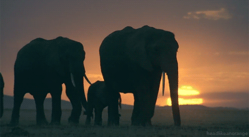
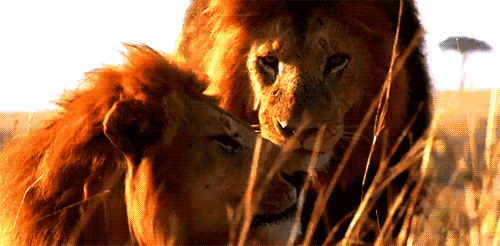
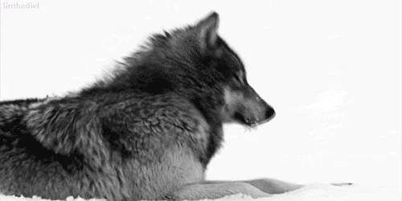

| Name of animal |
Picture |
Description |
| Dog |
|
Dogs are domesticated mammals, not natural wild animals. They were originally bred from wolves. Dogs eat both meat and vegetables, often mixed together and sold in stores as dog food. A baby dog is called a pup or puppy.
Dogs are sometimes referred to as "man's best friend" because they are kept as domestic pets and are usually loyal and like being around humans. |
| Elephant |
 |
Elephants are the largest living land mammals. Their skin colour is grey. In the wild, elephants have strong family relationship. Their ways of acting toward other elephants are hard for people to understand.
They "talk" to each other with very low sounds. Most elephants sounds are so low, people cannot hear them. But elephants can hear these sounds far away. Elephants have strong, leathery skin to protect themselves. |
| Lion |
 |
Lions have strong, compact bodies and powerful forelegs, teeth, and jaws for pulling down and killing prey. Their coats are yellow-gold. Adult males have shaggy manes that range in color from blond to
reddish-brown to black and also vary in length. The length and color of the mane is believed to be determined by such factors as age, genetics and hormones. Young lions have light spotting on their coats that
will disappear as they grow up. Without their coats, lion and tiger bodies are so similar that only experts can tell them apart. |
| Wolf |
 |
Wolves are a class of the canine family, and they seem to do very well in the right environment. In fact, they are the largest of all canines with exception of some dog species. They are meat eaters
and can range in size (40 to 65 inches) considerably depending on where they live. They are very intelligent animals that live in groups that are known as packs. They have thick fur to help them survive in a
variety of climates. They hunt as a group which makes it possible for them to take down large prey such as moose and elk. |
| Zebra |
 |
Zebras are closely related to horses and donkeys, it is best known for its black and white striped body. In fact, zebra stripe patterns are unique to each individual.
These stripes are believed to be camouflage devices that help zebras hide well in the grass. |